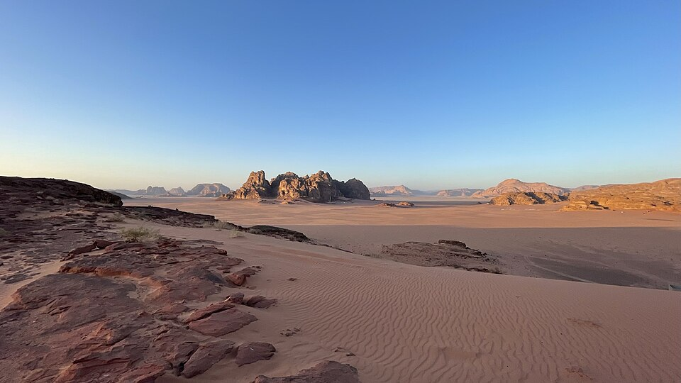

Weekend Escape
A short Dead Sea or Wadi Rum reset — the easiest way to try Jordan over a long weekend.
See this journey From Amman or Aqaba
One country, done properly. Tell us the feeling you want — a quick reset, a family adventure, or a luxury escape — and we design the whole journey privately around you.

Jordan is a short flight from the Gulf, visa-friendly, and endlessly photogenic — Petra’s rose-red canyons, the silence of Wadi Rum, and the float of the Dead Sea, all within a few hours’ drive.
It suits families especially well: safe, welcoming, Arabic-speaking, with hotels and camps that understand privacy and comfort. We handle the logistics so your family only has to enjoy it.
We build your route around the ones that matter most to you — no forced marches through the rest.
 Wonder of the worldPetra
Wonder of the worldPetra DesertWadi RumFloat & spaThe Dead Sea
DesertWadi RumFloat & spaThe Dead Sea Roman cityJerash
Roman cityJerash CapitalAmman
CapitalAmmanEach is a private starting point, reshaped around your family and your pace.
A short Dead Sea or Wadi Rum reset — the easiest way to try Jordan over a long weekend.
Petra, Wadi Rum and the Dead Sea, unhurried, with comfort stops built in.
A luxury desert camp and a Dead Sea resort, with private guiding and fine dining.
North to south at a relaxed pace, with an optional Aqaba and Red Sea finish.
No forms to labour over and no payment to begin — most of the detail is gathered in a simple WhatsApp conversation.
Your dates, who’s travelling, and the comfort level you prefer.
A private route, hotels and pacing built around you — usually within a day.
We refine together on WhatsApp until it’s right, then confirm with a secure deposit.
Private transfers, guides and 24/7 support from arrival to goodbye.
Yes. Planning and support are available in Arabic and English, in writing and by phone.
It’s our specialty — private vehicles, gentle pacing, multi-room logic, and food everyone enjoys.
It depends on hotel level, season and group size. We’ll give a clear, itemised quote before you commit.
A secure deposit confirms your dates; the balance is due before travel. Terms are written and clear.
Most Gulf and GCC-resident travellers enter easily; we’ll advise you for your exact situation.
Yes — fair, written cancellation and change terms are agreed up front.
Share the comfort level you prefer — we'll design the journey around you, and reply on WhatsApp within a few hours.